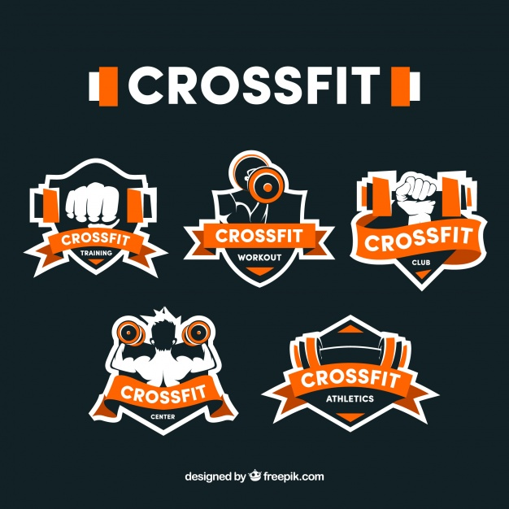

Información Crossfit
Es una técnica de entrenamiento que concatena movimientos de diferentes disciplinas, tales como la halterofilia, el entrenamiento metabólico o el gimnástico.
Consiste en acometer un programa de ejercicios (flexiones, tracción, etc), en un tiempo determinado y con un número definido de veces.
Esta noción tiene como principio mantener intacta la motivación de los deportistas a largo plazo. Se puede realizar de manera individual o en grupo, y las sesiones suelen ser cortas, variadas y adaptables en función del nivel de cada participante.
El creador de CrossFit, Greg Gassman, ha diseñado varios grupos, unos bautizados con nombres de mujeres en referencia a los huracanes americanos, y otros con nombres de héroes militares, policías, o bomberos, entre otros, como homenaje.
Existen también otros grupos que no tienen nombre, simplemente la descripción de los ejercicios. El tiempo de ejecución de cada grupo puede variar, desde solo 5 minutos hasta casi 30 minutos, sin contar la entrada en calor y la vuelta a la calma.
Los grupos pueden constar de 1, 2 o 3 grupos de ejercicios, dependiendo de las áreas físicas que se pretenda desarrollar.
Algunos de los atletas de crossfit que han logrado notoriedad son: Katrin Tanja Davidsdottir, Tia-Clair Toomey, Ragnheiður Sara Sigmundsdottir, Samantha Briggs,1 Rich Froning Jr, Mat Fraser, Ben Smith, Jason Khalipa, Mikko Salo.